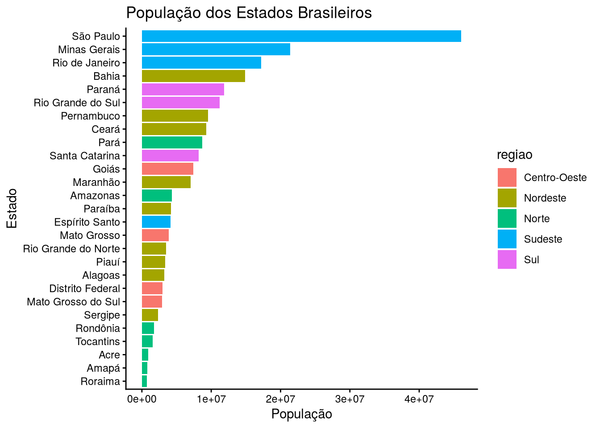
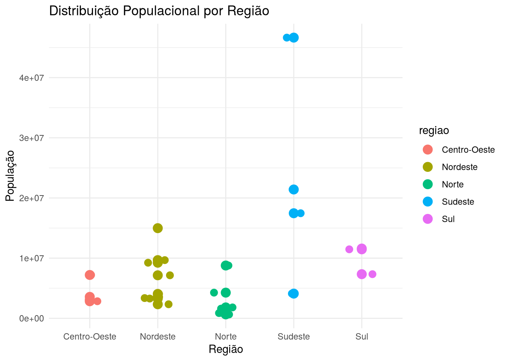
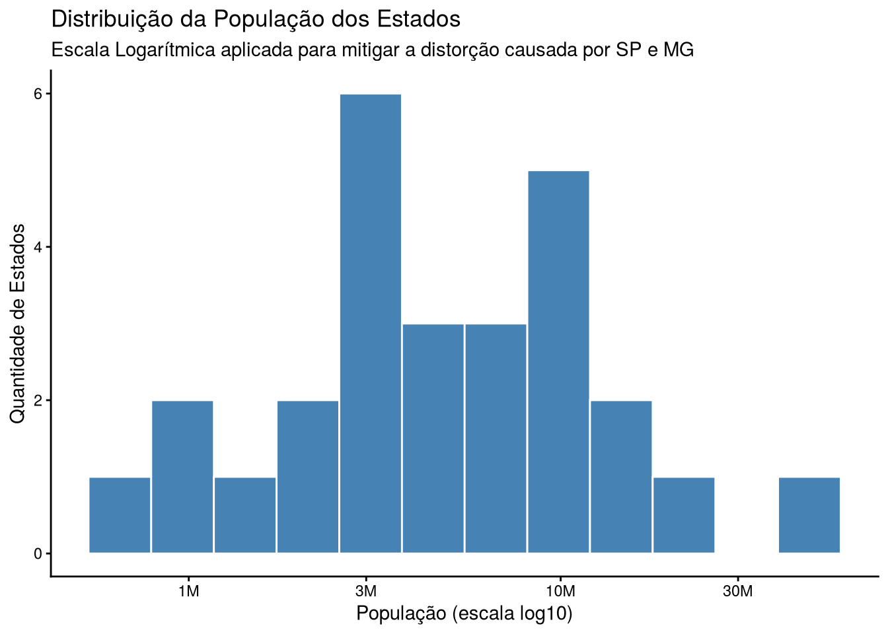
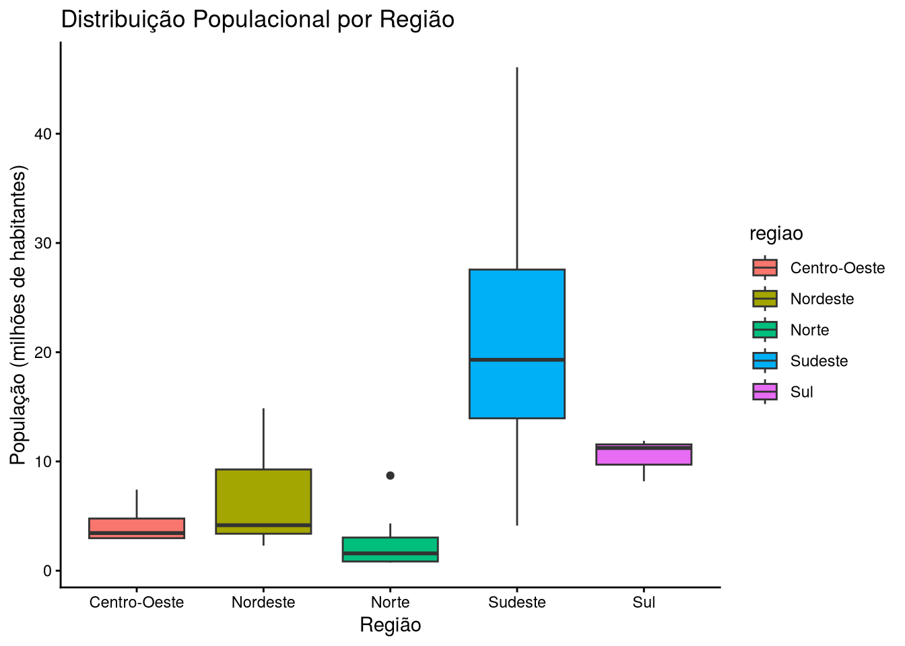
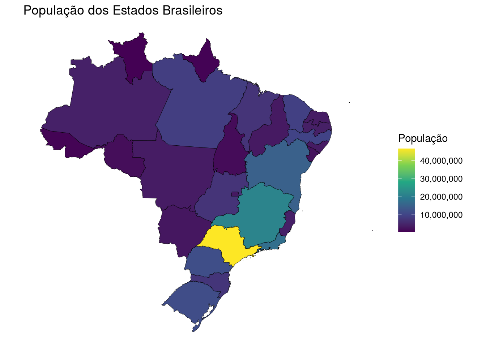
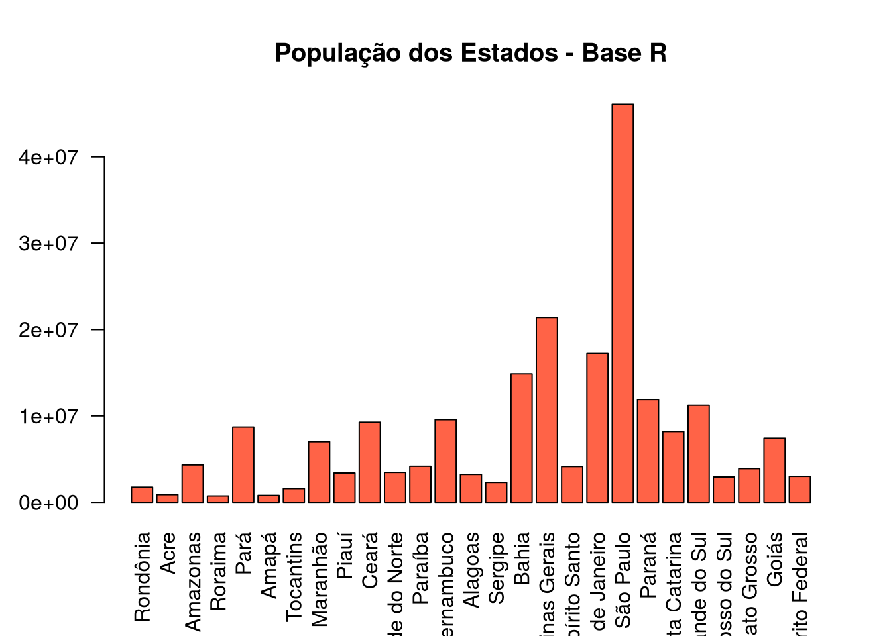
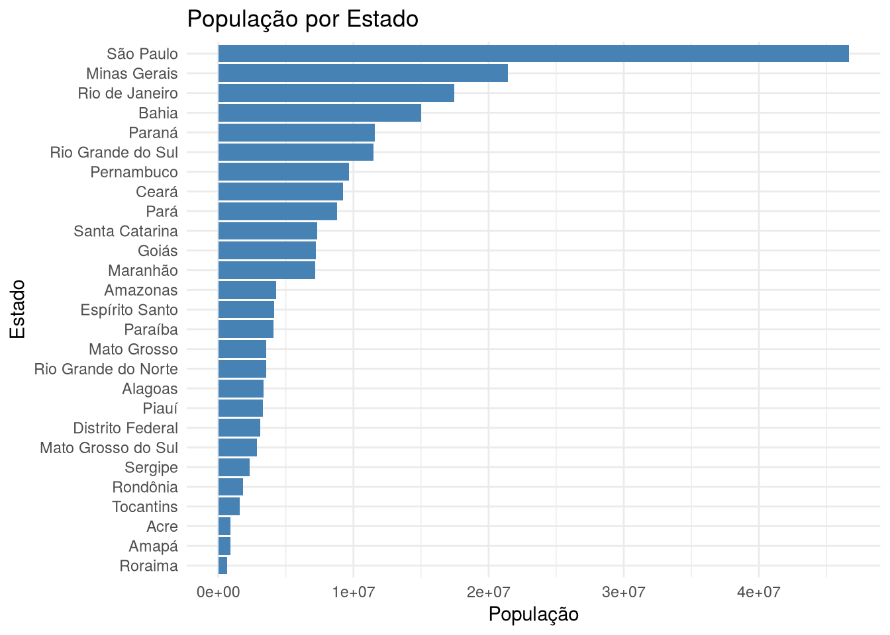

library(sidrar)
library(tidyverse)
library(plotly)
library(sf)
library(geobr)
#########################################################
# Obtendo dados do SIDRA
#########################################################
# Importando a população residente (Tabela 6579)
pop <- get_sidra(
api = "/t/6579/n3/all/v/9324/p/2021"
)
#########################################################
# Obtendo malha territorial do IBGE via geobr
#########################################################
estados <- read_state(year = 2020, showProgress = FALSE)

Relatório de Aula Prática 04
Estatística e Probabilidade
Prof. Ben Dêivide (DEFIM/CAP/UFSJ)
1 Introdução
O Brasil possui disparidades populacionais gigantescas entre seus estados. Enquanto algumas regiões concentram dezenas de milhões de habitantes e extensas áreas urbanizadas, outras apresentam uma ocupação territorial muito mais dispersa e vazia.
Essas diferenças impactam diretamente tudo o que envolve infraestrutura e planejamento, como transporte, saúde e educação. Por isso, colocar esses dados no papel (ou na tela) ajuda a entender de fato como o país está organizado demograficamente.
Neste relatório, utilizei dados públicos puxados direto do IBGE para construir gráficos e mapas no R. O objetivo é sair da tabela crua e visualizar essa distribuição populacional de forma clara, direta e visual.
2 Obtenção dos Dados
Os dados não foram baixados manualmente. Utilizei a API pública do SIDRA/IBGE para importar os indicadores oficiais direto para o ambiente do R. Já a malha geográfica dos estados foi obtida utilizando o pacote oficial geobr, que evita problemas de instabilidade com links FTP na hora de plotar o mapa.
Os pacotes utilizados foram:
3 Tratamento dos Dados
Foi necessário limpar os nomes, converter os códigos dos estados para números e classificar todo mundo por região para facilitar a análise visual. Também criei uma flag para separar rapidamente quem está acima ou abaixo da média nacional.
Código
#########################################################
# Organizando variáveis
#########################################################
pop <- pop |>
select(
estado = `Unidade da Federação`,
code_state = `Unidade da Federação (Código)`,
populacao = Valor
) |>
mutate(code_state = as.numeric(code_state))
#########################################################
# Agrupando por regiões
#########################################################
pop <- pop |>
mutate(
regiao = case_when(
code_state >= 10 & code_state < 20 ~ "Norte",
code_state >= 20 & code_state < 30 ~ "Nordeste",
code_state >= 30 & code_state < 40 ~ "Sudeste",
code_state >= 40 & code_state < 50 ~ "Sul",
code_state >= 50 & code_state < 60 ~ "Centro-Oeste"
)
)
#########################################################
# Criando variável auxiliar de média e o Join espacial
#########################################################
media_brasil <- mean(pop$populacao, na.rm = TRUE)
pop <- pop |>
mutate(
acima_media = ifelse(populacao > media_brasil, "Sim", "Não")
)
# O geobr já traz a coluna 'code_state' no formato correto
mapa <- estados |> left_join(pop, by = "code_state")4 Construção dos Gráficos
4.1 Gráfico de Barras
É o método mais tradicional e eficiente para bater o olho e comparar quem é o maior e quem é o menor.
ggplot(
pop,
aes(
reorder(estado, populacao),
populacao,
fill = regiao
)
) +
geom_col() +
coord_flip() +
theme_minimal() +
labs(
title = "População por Estado Brasileiro",
x = "Estado",
y = "População",
fill = "Região"
)
4.2 Gráfico de Dispersão
O gráfico de dispersão plota os estados em eixos. Dá para perceber claramente os agrupamentos e como a região Sudeste descola das demais.
Código
ggplot(
pop,
aes(
regiao,
populacao,
color = regiao
)
) +
geom_point(size = 4) +
geom_jitter(
size = 3,
width = 0.2
) +
labs(
title = "Distribuição Populacional por Região",
x = "Região",
y = "População"
) +
theme_minimal()
4.3 Histograma (Escala Logarítmica)
Se plotarmos a população em uma escala linear padrão, o gráfico fica com um “buraco” no meio. Isso acontece porque o estado de São Paulo, com mais de 46 milhões de habitantes, puxa o limite do gráfico lá para a frente e espreme os outros estados no primeiro bloco.
Para resolver essa distorção, apliquei uma escala logarítmica (log10) no eixo X. Agora o formato real da distribuição populacional do Brasil aparece com clareza.
ggplot(pop, aes(x = populacao)) +
geom_histogram(
bins = 12,
fill = "steelblue",
color = "white"
) +
scale_x_log10(labels = scales::label_number(scale_cut = scales::cut_short_scale())) +
labs(
title = "Distribuição da População dos Estados",
subtitle = "Escala Logarítmica aplicada para mitigar a distorção causada por SP e MG",
x = "População (escala log10)",
y = "Quantidade de Estados"
) +
theme_classic()
4.4 Boxplot
O boxplot evidencia a assimetria dentro de cada região. O Sudeste se estica para cima justamente por causa de São Paulo e Minas Gerais, enquanto o Sul é muito mais uniforme.
Código
ggplot(
pop,
aes(
regiao,
populacao / 1000000,
fill = regiao
)
) +
geom_boxplot() +
labs(
title = "Distribuição Populacional por Região",
x = "Região",
y = "População (milhões de habitantes)"
) +
theme_classic()
4.5 Mapa Temático
O mapa temático mostra espacialmente a concentração da população brasileira no litoral e nas regiões mais ao sul/sudeste.
ggplot(mapa) +
geom_sf(aes(fill = populacao)) +
scale_fill_viridis_c(
labels = scales::comma
) +
labs(
title = "População dos Estados Brasileiros",
fill = "População"
) +
theme_void()
4.6 Gráfico Interativo
Transformei o gráfico de barras em interativo usando o plotly. Isso permite passar o mouse, ler os valores exatos e dar zoom no que interessa.
Código
g <- ggplot(
pop,
aes(
reorder(estado, populacao),
populacao,
fill = regiao
)
) +
geom_col() +
coord_flip() +
theme_minimal() +
labs(
title = "População por Estado (Interativo)",
x = "Estado",
y = "População"
)
ggplotly(g)5 Comparação entre Base R e ggplot2
5.1 Base R
O R nativo entrega o gráfico rápido e direto.
Código
barplot(
pop$populacao,
names.arg = pop$estado,
las = 2,
col = "steelblue",
main = "População por Estado",
cex.names = 0.6
)
5.2 ggplot2
O ggplot2 exige um pouco mais de código, mas entrega um resultado visualmente muito superior.
Código
ggplot(
pop,
aes(
reorder(estado, populacao),
populacao
)
) +
geom_col(fill = "steelblue") +
coord_flip() +
labs(
title = "População por Estado",
x = "Estado",
y = "População"
) +
theme_minimal()
5.3 Qual a diferença na prática?
O Base R é aquela ferramenta rápida para quebrar galho durante a análise. Escreve uma linha, a tela cospe o gráfico e pronto.
O ggplot2 é para construir um produto final. Ele permite personalização e cria visualizações com cara de relatório profissional. Se o objetivo é apresentar os dados, o ggplot2 ganha pela estética e flexibilidade.
6 Interpretação dos Resultados
Olhando o conjunto das análises, fica nítido que o Brasil tem a sua população altamente ancorada no Sudeste. São Paulo não é apenas o estado mais populoso; ele distorce completamente a média nacional, forçando ajustes matemáticos para conseguirmos ver o resto do país.
Por outro lado, os estados da região Norte, que detêm a maior faixa territorial do Brasil, apresentam populações menores e dispersas. O contraste regional é enorme.
7 Conclusão
Utilizar o R para tratar esse problema eliminou o trabalho braçal de baixar planilhas. O ecossistema puxa os dados pela API, faz o join espacial e cospe o mapa pronto.
De todas as abordagens, o mapa temático e o histograma logarítmico foram os recursos mais valiosos desta análise, traduzindo a desigualdade demográfica do Brasil de uma maneira que números brutos em uma tabela não conseguiriam mostrar.